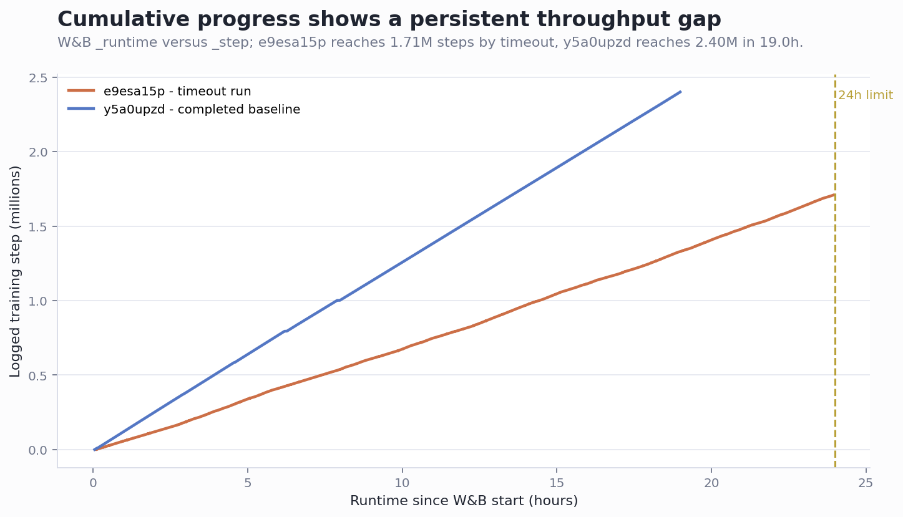
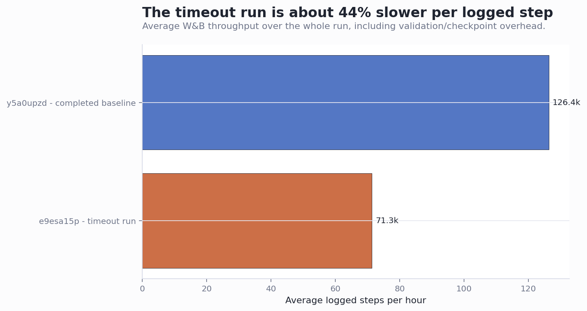
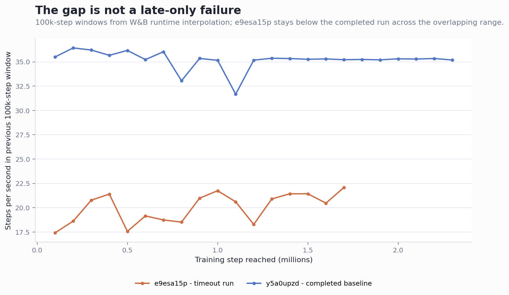

W&B runtime comparison: e9esa15p vs y5a0upzd
Generated 2026-06-11 11:41 UTC. Sources: W&B API, local metrics.csv files, local SLURM logs, and local MANIFEST.json where available.
Answer: e9esa15p did not miss completion because of a small tail-end issue. It was materially slower throughout the run and then hit the 24h SLURM limit. W&B shows 19.82 steps/s for e9esa15p versus 35.11 steps/s for y5a0upzd, so the timeout run ran at only 56% of the completed run's step throughput.
At its observed pace, e9esa15p needed about 28.0h to reach its own 2.0M-step target. The completed run's pace would have reached 2.0M steps in about 15.8h and actually reached 2.4M steps in 19.0h.
The two runs were not parity-identical
The visible architecture-level settings are close enough to compare as CNN L1 training, but the run setup is not exactly the same. The June run is from lucasailerls/3d-63-l1-replay-capacity-ablation at c934a67c195e6a673dd2d5183f6c9221340b5a37 with a dirty manifest and total_steps=2,000,000. The April run is the older buffer-fix baseline with total_steps=2,400,000 and no local manifest captured in this checkout. The SLURM logs also show different nodes and driver stacks: uc2n907.localdomain / NVIDIA H100 PCIe versus uc3n071.localdomain / NVIDIA H100.
| Run | State | Target steps | Last step | Runtime | Steps/hour | Episodes/hour | SLURM state | Node/GPU |
|---|---|---|---|---|---|---|---|---|
| e9esa15p - timeout run | crashed | 2,000,000 | 1,708,198 | 23.94h | 71.3k | 266 | TIMEOUT (exit code 0) | uc2n907.localdomain / NVIDIA H100 PCIe |
| y5a0upzd - completed baseline | finished | 2,400,000 | 2,399,999 | 18.99h | 126.4k | 479 | COMPLETED (exit code 0) | uc3n071.localdomain / NVIDIA H100 |
The throughput gap is visible in W&B runtime
The most direct comparison is W&B _runtime against logged training step. This avoids relying on log verbosity or checkpoint timestamps. The completed baseline advances much faster over the same wall-clock window; by 19h it has completed 2.4M steps, while the timeout run reaches only about 1.35M steps by the same runtime and 1.71M by 24h.

Average throughput over the full recorded run is the simplest numerical summary: e9esa15p logged 71.3k steps/hour, while y5a0upzd logged 126.4k steps/hour.

The slowdown is sustained, not just a final crash
Windowed 100k-step throughput stays lower for the June run across the overlapping training range. This points away from a single final checkpoint, W&B sync, or crash-only explanation. The decisive issue is lower steady-state progress.

Validation/checkpointing does not explain the whole gap
The April baseline logs periodic validation and completes final validation/checkpointing. The June timeout run has fewer synced files in W&B and the SLURM log ends at the scheduler timeout, but the W&B runtime curve is already slower before the end. The conclusion is that validation/checkpointing may contribute to overhead, but it is not the primary cause of the 24h miss.
System metrics suggest environment/runtime differences, not a model-size change
Both jobs report H100-class GPUs and the same 8 CPU / 64 GB allocation. However, the runs are on different nodes, driver versions, W&B versions, and branch/runtime environments. The June job log also starts by uninstalling and reinstalling 17 packages, which is not present in the April run log and indicates the environment was not operationally identical.
| Run | GPU util median | GPU memory median | GPU allocated median GB | CPU median | RSS median MB |
|---|---|---|---|---|---|
| e9esa15p - timeout run | 42.0 | 16.0 | 60.3 | 10.7 | 15,099.6 |
| y5a0upzd - completed baseline | 61.0 | 24.0 | 70.8 | 0.7 | 18,711.0 |
Important config differences
The W&B config diff is small but enough to reject the assumption that the runs are exact duplicates. The target step count differs, the seed differs, and the June run records newer encoder/VGGT-related config keys that the April run did not log.
| Config key | e9esa15p | y5a0upzd |
|---|---|---|
| logdir | 'output/r2dreamer-l1-replay-capacity/cnn-cap1m-seed4367942/run-4974622' | 'output/r2dreamer-curriculum-l1-rerun/run-3957651' |
| seed | 4367942 | 3957651 |
| total_steps | 2000000 | 2400000 |
Conclusion
- Primary cause:
e9esa15phas much lower steady-state step throughput, about 44% belowy5a0upzd. - Immediate failure mode: SLURM killed job
4974622at the 24h timelimit, leaving the run at 85.4% of its 2.0M-step target. - Parity finding: The setup is not exactly the same: branch/SHA, target steps, seed, node, driver, W&B version, and package setup differ.
- Most likely investigation path: reproduce the June branch/run config on the faster node class or rerun a short A/B smoke on both nodes with fixed SHA, seed, target, validation cadence, and no environment mutation at startup. The key metric should be W&B
_step/_runtimeover the first 200k-500k steps.
Audit notes
Local evidence paths used by the generator: output/r2dreamer-l1-replay-capacity/cnn-cap1m-seed4367942/, output/runs/r2dreamer-curriculum-l1-rerun/, W&B runs e9esa15p and y5a0upzd. The analysis treats W&B _step as the logged training/environment-step axis; "episodes" in the user prompt appears to refer to million-step progress, because W&B episode counts are 6,362 and 9,105, not millions.